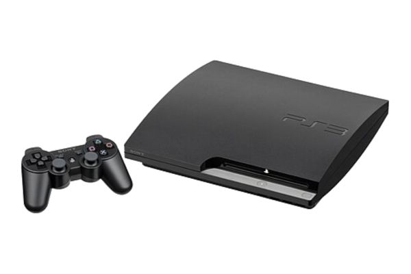
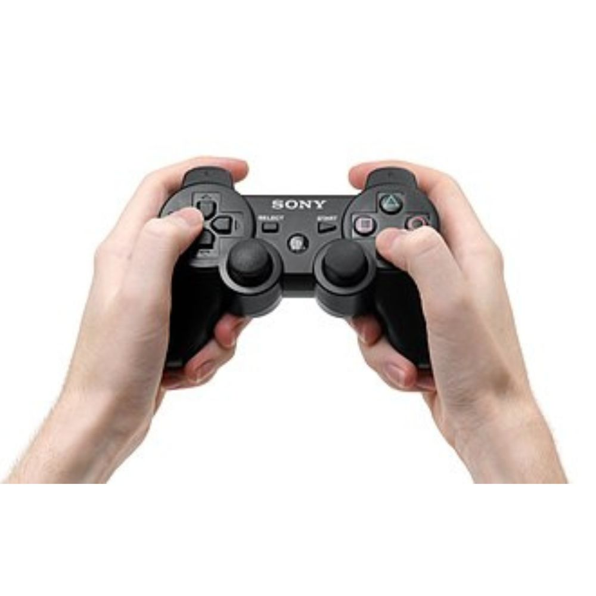
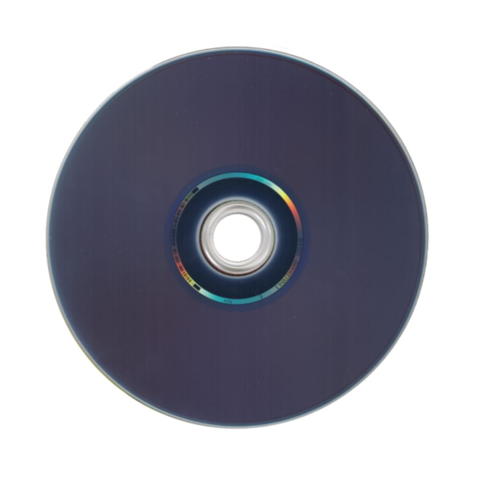

PlayStation 3

O PlayStation 3 (PS3) é um console de videogames desenvolvido pela Sony Computer Entertainment. É o sucessor do PlayStation 2 e faz parte da marca PlayStation de consoles. Foi lançado em 11 de novembro de 2006, no Japão, 17 de novembro de 2006 na América do Norte e em 23 de março de 2007 na Europa e Oceânia. O PlayStation 3 competiu com o console Xbox 360 da Microsoft e o Wii da Nintendo como parte da sétima geração de consoles de videogames.
O console foi anunciado oficialmente pela primeira vez na edição de 2005 da E3 e foi lançado no final de 2006. Foi o primeiro console a usar o disco Blu-ray como formato de mídia para gravação de jogos, seu meio de armazenamento primário. Foi o primeiro console da Sony a ter um Sistema On-line a PSN, a PlayStation Network, e a sua conectividade remota com o PlayStation Portable e PlayStation Vita, sendo capaz de controlar remotamente os dispositivos. Em setembro de 2009, o modelo Slim do PlayStation 3 foi lançado. Foi removida a capacidade de hardware para executar os jogos do PlayStation 2. Era mais leve e mais fino do que a versão original, e apresentava um logotipo redesenhado e design de marketing, bem como uma pequena mudança de start-up no software. Um novo modelo denominado Super Slim foi lançado no final de 2012, refinando e redesenhando o console.
O sistema teve um início com vendas ruins no mercado, porém conseguiu se recuperar, especialmente após a introdução do modelo Slim. O seu sucessor, o PlayStation 4, foi lançado em 15 de novembro de 2013. Em 29 de setembro de 2015, a Sony confirmou que a produção de novos consoles iriam ser descontinuadas na Nova Zelândia, porém o sistema permaneceu em produção em outros mercados. A fabricação de novas unidades nos Estados Unidos terminaram em outubro de 2016. Em 2017, o Japão foi o último território em que novas unidades ainda estavam sendo produzidas até 29 de maio de 2017, quando a Sony confirmou que o PlayStation 3 era descontinuado no Japão.
História
O PlayStation 3 foi lançado inicialmente no Japão em 11 de novembro de 2006 às 07h00. De acordo com o Media Create, 81 639 unidades foram vendidas em menos de 24 horas à sua introdução no Japão. 6 dias após o seu lançamento no Japão, o PlayStation 3 foi lançado na América do Norte, em 17 de novembro. Relatos de violência envolvendo o lançamento do PS3 incluem um cliente baleado,campistas assaltados a mão armada, clientes baleados por atiradores que estavam num carro em movimento portando armas BB e 60 campistas brigando por 10 sistemas.
Originalmente foi planejado um lançamento global do console em novembro, porém devido a um problema de atraso na produção do diodo de laser azul, utilizado no leitor de Blu-ray do console, poucas unidades puderam ser produzidas para a data original, e as regiões da Europa, Oriente Médio, África e Australasia só receberam o console em março do ano seguinte. Com um atraso de última hora, algumas empresas receberam unidades para pré-vendas, nas quais a Sony informou os clientes de quais são elegíveis para reembolsos completos ou podiam continuar a pré-venda. Em 24 de janeiro de 2007, a Sony anunciou que o PlayStation 3 seria lançado em 23 de março de 2007, na Europa, Austrália, Oriente Médio, África e Nova Zelândia. Foram vendidas cerca de 600 mil unidades do sistema em seus dois dias. Em 7 de março de 2007, a versão de 60 GB do PlayStation 3 foi lançada em Singapura com um preço de S$ 799. O console foi lançado na Coreia do Sul em 16 de junho de 2007, com uma versão única equipada com um disco rígido de 80 GB e IPTV.
Controles
Vários acessórios para o console foram desenvolvidos, incluindo os controladores sem fio Sixaxis e DualShock 3, o Logitech Driving Force GT, o Logitech Cordless Precision™ Controller, o Controle Remoto BD, a câmera PlayStation Eye e o acessório sintonizador/gravador digital de vídeo PlayTV DVB-T.
Em sua conferência à imprensa na Tokyo Game Show 2007, a Sony anunciou o DualShock 3 (marca comercial DUALSHOCK 3), um controlador de PlayStation 3 com as mesmas funções e design do Sixaxis, mas com capacidade de vibração incluída. Primeiras impressões descrevem o controlador como notavelmente mais pesado do que um controlador Sixaxis padrão e capaz de forces vibratórias comparáveis as do DualShock 2. Foi lançado no Japão em 11 de novembro de 2007, na América do Norte em 5 de abril de 2008, na Austrália em 24 de abril de 2008, na Nova Zelândia em 9 de maio de 2008, na Europa em 2 de julho de 2008, no Reino Unido e Irlanda em 4 de julho de 2008 e Seicheles em março de 2010. Durante a E3 2009, a Sony anunciou planos para lançar o PlayStation Move em 2010. Atualmente o PlayStation Move vem incluído no pack 320 GB ou no Starter Pack que inclui a câmera.

Jogos
O PlayStation 3 foi lançado na América do Norte com quatorze títulos, com outros três sendo lançados antes do final de 2006. Após a primeira semana de vendas, foi confirmado que Resistance: Fall of Man da Insomniac Games havia sido o título de lançamento mais vendido na América do Norte. O jogo foi altamente aclamado por numerosos sites de videogame, incluindo GameSpot e IGN, que dera-lo o prêmio de Jogo do Ano para PlayStation 3 de 2006. Alguns títulos perderam a janela de lançamento e foram atrasados até o começo de 2007, como The Elder Scrolls IV: Oblivion, F.E.A.R. e Sonic the Hedgehog. Durante o lançamento japonês, Ridge Racer 7 foi o jogo mais vendido, enquanto que Mobile Suit Gundam: Crossfire também se saiu bem nas vendas;ambos oferecidos pela Namco Bandai. O PlayStation 3foi lançado na Europa com 24 títulos, incluindo alguns que não foram oferecidos nos lançamentos norte-americano e japonês, como Formula One Championship Edition, MotorStorm e Virtua Fighter 5. Resistance: Fall of Man e MotorStorm foram os títulos com maior sucesso em 2007, ambos recebendo sequências subsequentemente na forma de Resistance 2 e MotorStorm: Pacific Rift. Na E3 de 2007, a Sony conseguiu mostrar uma série de seus jogos para PlayStation 3 previstos para lançamento, incluindo Heavenly Sword, Lair, Ratchet & Clank Future: Tools of Destruction, Warhawk e Uncharted: Drake's Fortune; os quais foram lançados no terceiro e quarto trimestres de 2007. Também mostraram uma série de títulos para lançamento em 2008 e 2009; mais notavelmente Killzone 2, Infamous, Gran Turismo 5 Prologue, LittleBigPlanet e SOCOM: U.S. Navy SEALs Confrontation. Também foi mostrada uma série de jogos exclusivos de terceiro, incluindo o altamente antecipado Metal Gear Solid 4: Guns of the Patriots, juntamente com outros títulos exclusivos de grande importância como Grand Theft Auto 4, Call of Duty 4: Modern Warfare, Assassin's Creed, Devil May Cry 4 e Resident Evil 5. Mais dois outros títulos importantes para o PlayStation 3, Final Fantasy XIII e Final Fantasy Versus XIII, foram mostrados no TGS de 2007 para apaziguar o mercado japonês.
A Sony lançou, deste então, sua linha de títulos de baixo custo para o PlayStation 3, conhecida como a linha Greatest Hits na América do Norte, a linha Platinum na Europa e a linha The Best no Japão. Entre os títulos disponíveis na linha de baixo custo incluem: Grand Theft Auto IV, Resistance: Fall of Man, MotorStorm, Uncharted: Drake's Fortune, Rainbow Six: Vegas, Call of Duty 3, Assassin's Creed e Ninja Gaiden Sigma. Desde outubro de 2009, Metal Gear Solid 4: Guns of the Patriots, Ratchet & Clank Future: Tools of Destruction, Devil May Cry 4, Army of Two, Battlefield: Bad Company e Midnight Club: Los Angeles também se juntaram à lista. Quando colocados na lista "Greatest Hits", uma cópia não utilizada é revendida por US$ 30 e são reembaladas em uma “caixinha” vermelha.
Desde 31 de março de 2012, 595 milhões de jogos foram vendidos para o PlayStation 3.

Naughty Bear:Gameplay- demonstração do jogo.
Especificações
| CPU | GPU | ||
|---|---|---|---|
| Processador: | Cell Broadband Engine | Fabricante: | NVIDIA |
| Arquitetura: | PowerPC-based PPE + 8 SPEs | Modelo: | RSX "Reality Synthesizer" |
| Clock: | 3,2 GHz | Clock: | 550 MHz |
| Desempenho: | ~218 GFLOPS | Memória de vídeo: | 256 MB GDDR3 @ 700 MHz |
| Fabricante: | Sony, Toshiba, IBM | Compatibilidade: | OpenGL / NVIDIA Cg |
| Áudio | Mídia | ||
| Saída: | Dolby Digital 5.1, DTS, LPCM 7.1 | Formato: | Blu-ray Disc |
| Conversão: | 24-bit / 48 kHz | Capacidade: | 25 GB (simples) / 50 GB (dupla camada) |
| Compatibilidade: | CD, DVD, Blu-ray, HDD interno | ||
| Velocidade: | 2x Blu-ray | ||
| Memória | |||
| RAM principal: | 256 MB XDR @ 3,2 GHz | VRAM (vídeo): | 256 MB GDDR3 @ 700 MHz |
| Armazenamento interno: | HDD de 20 GB a 500 GB (dependendo do modelo) | Cartão de memória: | Slots para SD, CompactFlash e Memory Stick (modelos iniciais) |
| Cache L2 (CPU): | 512 KB | Canal de dados: | 128 bits (XDR) / 128 bits (GDDR3) |